turn02-v1 blob 83b38b28 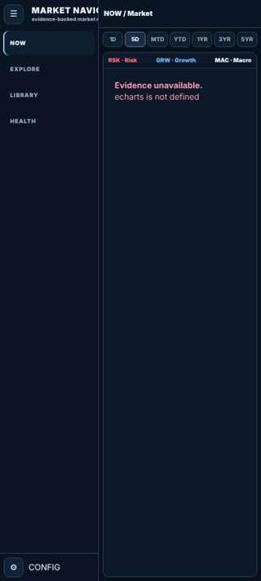
NOW · RSK · 5D no Analyze path found turn03-pre-ship blob 8510c336 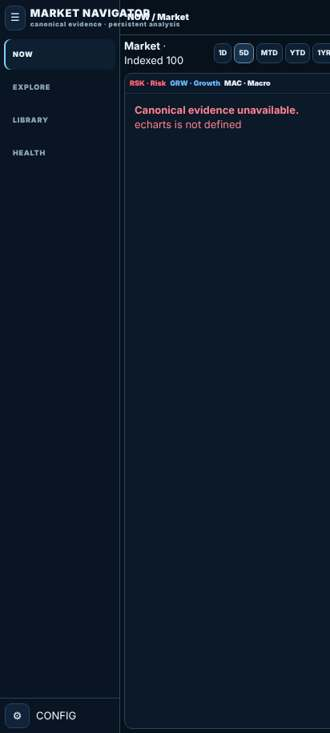
NOW · RSK · 5D no Analyze path found turn04-pre-ship blob e600f22c 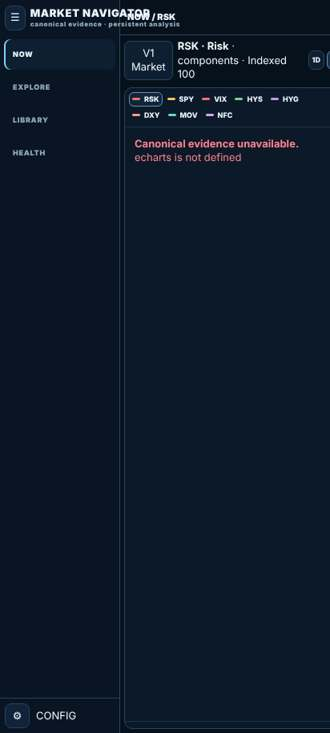
NOW · RSK · 5D no Analyze path found turn05-pre-ship blob b076b917 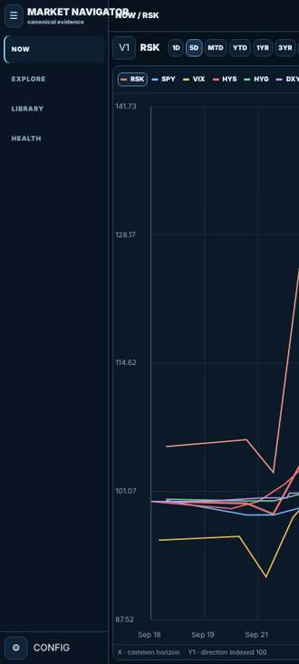
NOW · RSK · 5D no Analyze path found turn06-pre-ship blob 38bb51c7 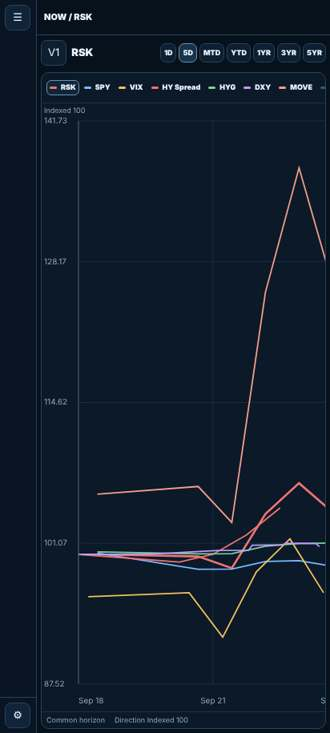
NOW · RSK · 5D no Analyze path found turn07-pre-ship blob 886a9420 NOW · RSK · 5D no Analyze path found turn08-pre-ship blob 5487cdf5 NOW · RSK · 5D no Analyze path found turn09-pre-ship blob 2de4c4f7 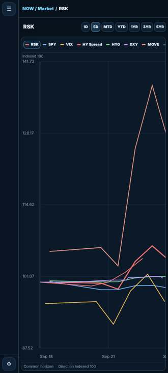
NOW · RSK · 5D no Analyze path found turn10-pre-ship blob d3c52e87 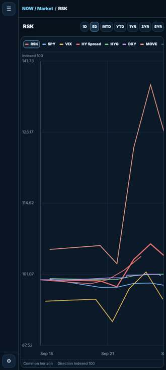
NOW · RSK · 5D no Analyze path found turn11-pre-ship blob 2ca569a9 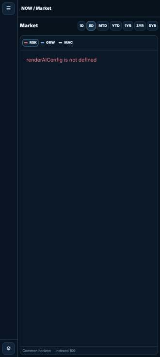
NOW · RSK · 5D after long-press card → Analyze turn12-pre-ship blob 6db56cf1 NOW · RSK · 5D no Analyze path found turn13-pre-ship blob 6eb8f4ba NOW · RSK · 5D 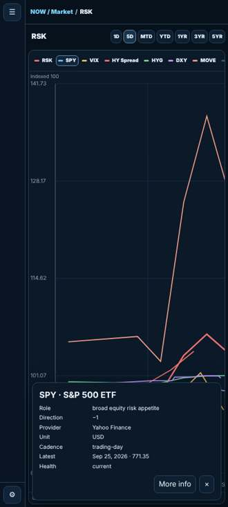
after long-press card → Analyze turn14-pre-ship blob 4011c3e2 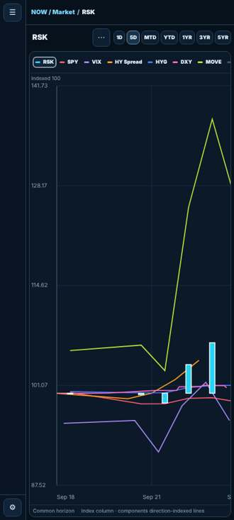
NOW · RSK · 5D 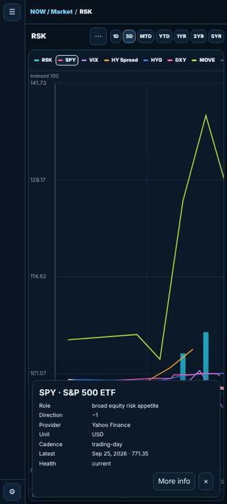
after long-press card → Analyze turn15-pre-ship blob 437825ce 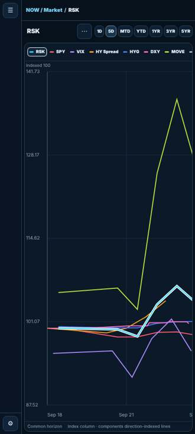
NOW · RSK · 5D 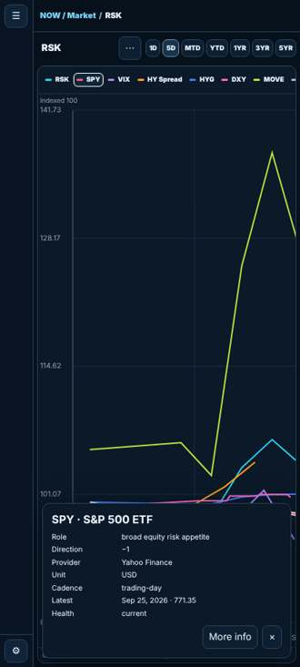
after long-press card → Analyze turn16-pre-ship blob 183b50b1 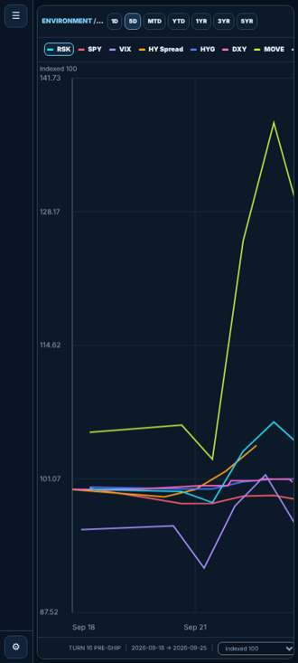
NOW · RSK · 5D 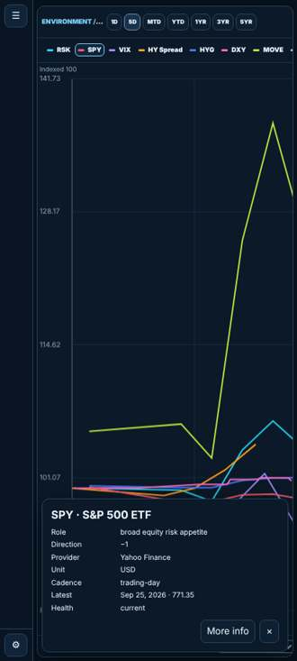
after long-press card → Analyze turn17-pre-ship blob 6b25f403 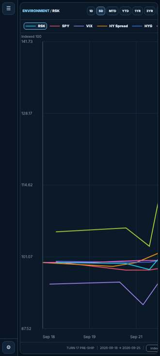
NOW · RSK · 5D after long-press card → Analyze turn18-pre-ship blob 4a52c7e7 NOW · RSK · 5D 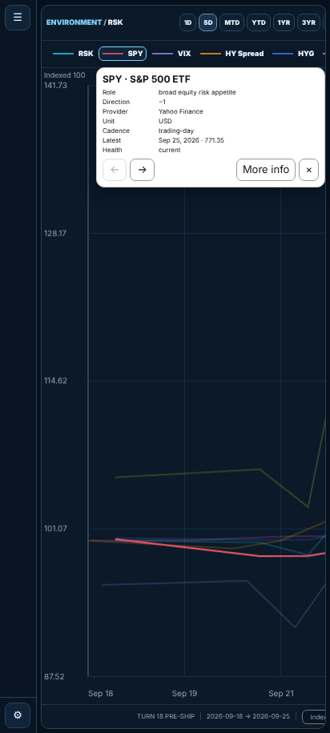
after long-press card → Analyze turn19-pre-ship blob 2b206489 NOW · RSK · 5D no Analyze path found
turn20-pre-ship blob 68dddf34 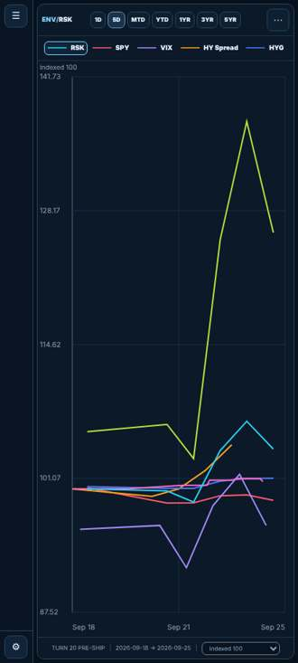
NOW · RSK · 5D no Analyze path found turn21-pre-ship blob 6a5654b8 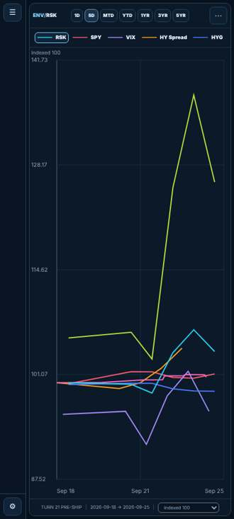
NOW · RSK · 5D no Analyze path found turn22-pre-ship blob 19e45a18 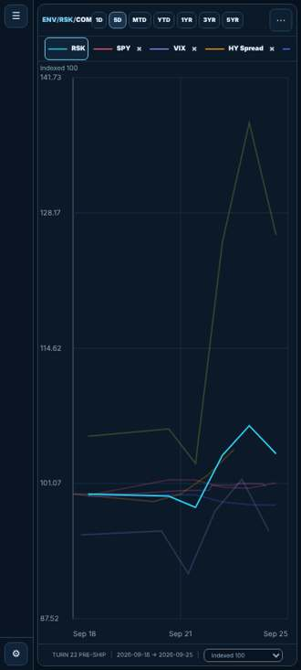
NOW · RSK · 5D 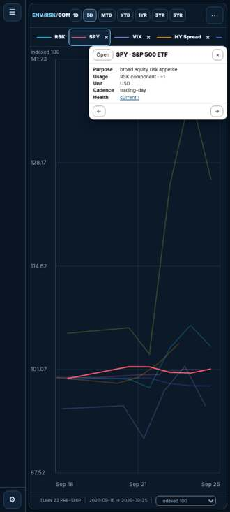
after long-press card → Analyze turn23-pre-ship blob ce833860 NOW · RSK · 5D 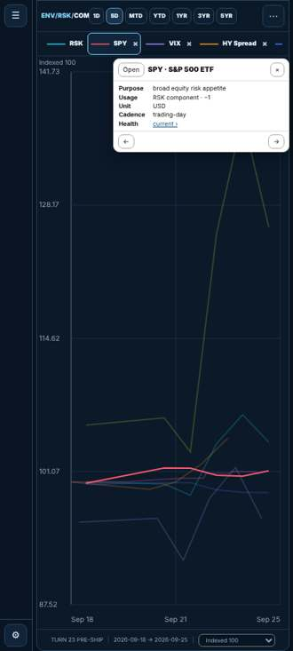
after long-press card → Analyze turn24-pre-ship blob 3364b948 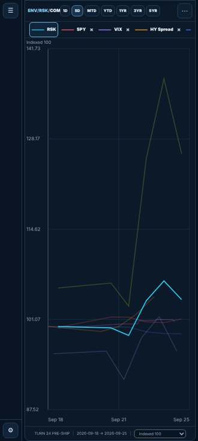
NOW · RSK · 5D after long-press card → Analyze turn25-pre-ship blob 89095a52 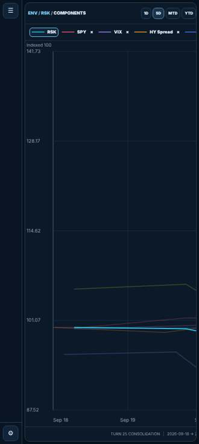
NOW · RSK · 5D 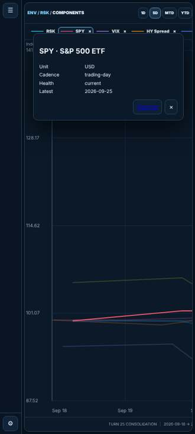
after long-press card → Analyze turn25-ship blob 8ebd7667 NOW · RSK · 5D after long-press card → Analyze turn26-ship blob fc61e29d 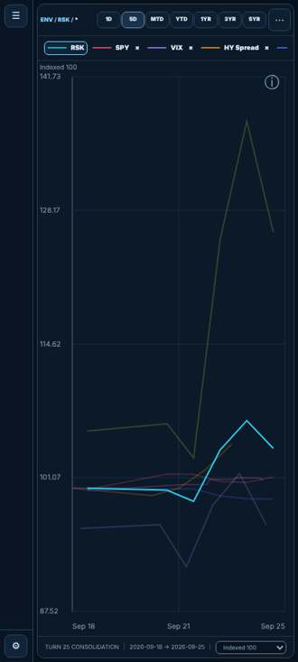
NOW · RSK · 5D 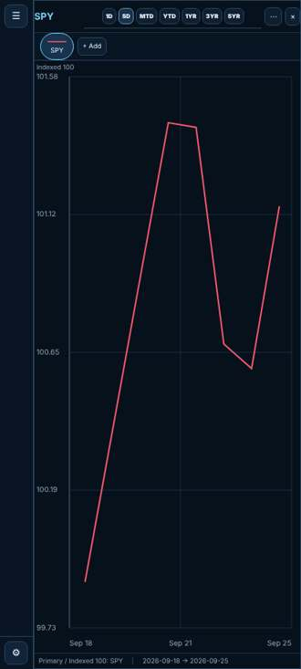
after long-press card → Analyze turn27-pre-ship blob a0a3f56e 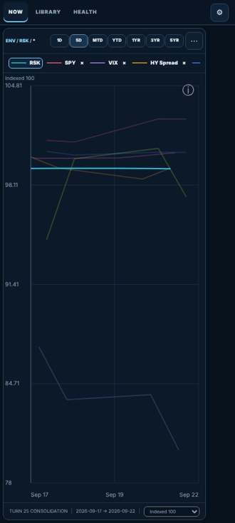
NOW · RSK · 5D after long-press card → Analyze turn28-base blob 066427f6 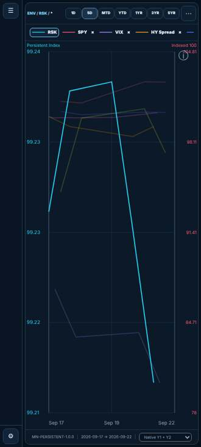
NOW · RSK · 5D after long-press card → Analyze turn28-pre-ship blob 1e57a0b4 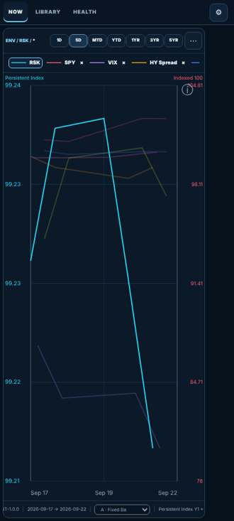
NOW · RSK · 5D 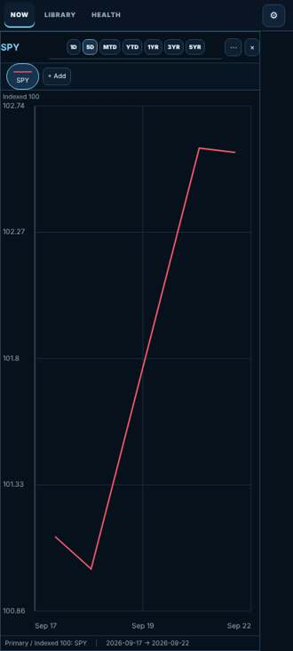
after long-press card → Analyze turn28-pre-ship-stage blob 54466188 NOW · RSK · 5D after long-press card → Analyze turn29-pre-ship blob 58282a74 NOW · RSK · 5D after long-press card → Analyze turn30-pre-ship blob 18b0b65c NOW · RSK · 5D 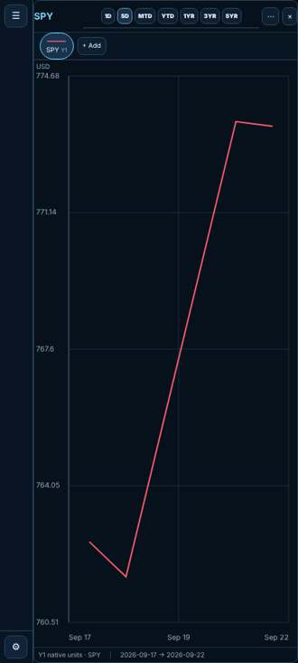
after long-press card → Analyze turn31-pre-ship blob 18c116f3 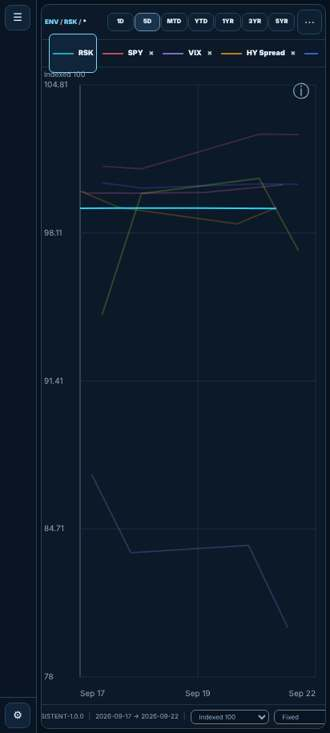
NOW · RSK · 5D no Analyze path found turn32-pre-ship blob 3a5925f5 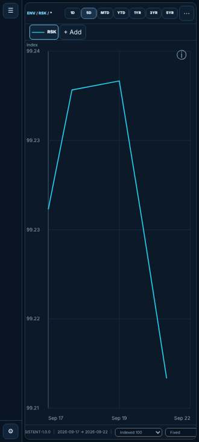
NOW · RSK · 5D no Analyze path found turn33-pre-ship blob 577aaa10 NOW · RSK · 5D 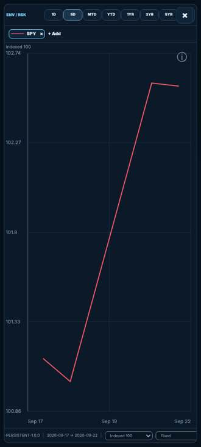
after long-press card → Analyze turn35-pre-ship blob 069c9a40 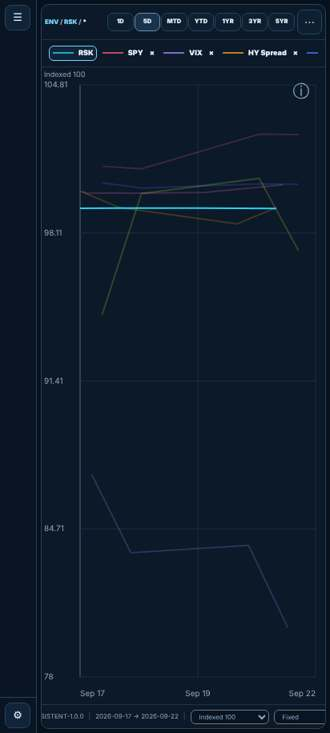
NOW · RSK · 5D after long-press card → Analyze turn37-stage2 blob cfdad628 NOW · RSK · 5D 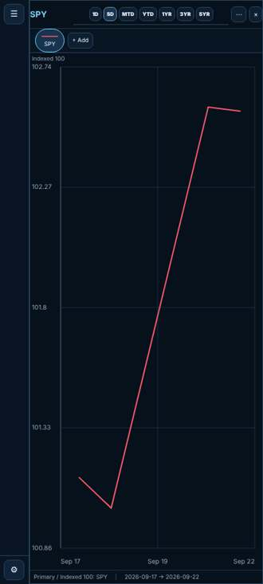
after long-press card → Analyze turn37-stage2-shadow blob 1575d11b NOW · RSK · 5D after long-press card → Analyze turn37-stage3 blob 70b6d5f9 NOW · RSK · 5D 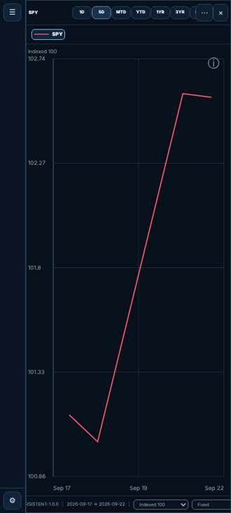
after long-press card → Analyze turn37-stage3-analyze blob 4b40ec9a NOW · RSK · 5D after long-press card → Analyze turn37-stage4 blob 6c168d5b NOW · RSK · 5D after long-press card → Analyze turn37-stage5 blob 9cdd9843 NOW · RSK · 5D 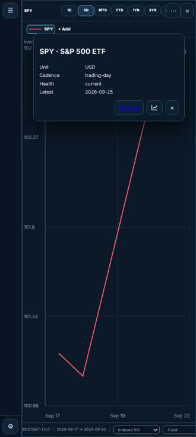
after long-press card → Analyze turn37-stage6 blob b8bf4e88 NOW · RSK · 5D 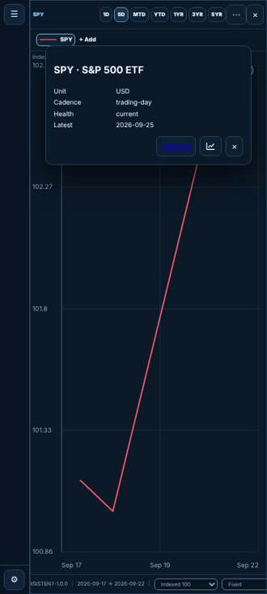
after long-press card → Analyze